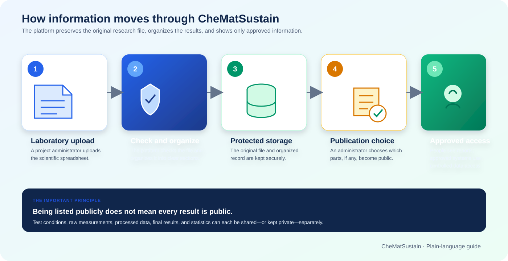

The CheMatSustain Database
A guide for everyone: what it contains, how information gets there, who can see it, and how a scientific spreadsheet becomes a useful report.
What is CheMatSustain?
CheMatSustain is a shared research information system for selected chemicals and nanomaterials. It helps project partners turn laboratory spreadsheets into organized, understandable reports.
Why does the project need it?
Different experiments
Laboratories carry out many kinds of tests, each with different measurements, units, tables and spreadsheet layouts.
One place to find results
The platform gives people a consistent way to find a material, understand a test and explore its results.
Controlled sharing
Data owners decide whether a test is public and which parts of it can be shown publicly.
Future reuse
Organized information is easier to compare, interpret and reuse in later research—with the right permission.
What kinds of tests are included?
The system supports 19 test types, including material characterization, biological response and environmental tests. Examples include DLS, FTIR, XPS, XRD, TGA, MTT, ROS, Trypan Blue, Water Flea and Algae tests.
How Information Moves Through the System

Five simple steps
- Upload: an authorized administrator uploads a laboratory spreadsheet.
- Check and organize: the platform reads the known spreadsheet layout and places information into consistent sections.
- Store: it keeps both the original file and the organized record in protected storage.
- Choose what to share: an administrator reviews publication settings for the test and each section.
- Use: approved people see reports; approved computer systems can receive controlled data access.
What Does One Test Record Contain?
Although every scientific test is different, CheMatSustain organizes its information into five familiar groups.
1. Test details
The experimental context: material, preparation, method, equipment, cell line, treatment and similar conditions.
2. Raw data
The observations or measurements captured during the experiment, such as readings, runs or replicates.
3. Processed data
Values calculated or normalized from the original observations.
4. Final results
The summarized scientific outcome, often including averages and variation.
5. Statistical analysis
Formal analysis used to judge patterns or differences, such as analysis of variance and comparisons between conditions.
How do people find a record?
Three labels identify a test in the portal:
The project work area
The selected chemical or nanomaterial
The experimental method
What Can the Public See?
Public sharing works at two levels: first, decide whether the test may appear publicly; second, decide which parts of that test may be shown.
The record can be listed publicly so people know that the test exists. The data owner might release the final outcome and statistics while keeping experimental conditions and detailed measurements private.
A small identification header remains visible
For a public report to make sense, a limited set of identifying information can remain visible even when detailed test conditions are not released. This includes the test’s name, short name, type, endpoint, reported endpoint outcome, procedure reference and reference-material identifier.
Publication checklist for data owners
- Confirm that the correct material and test are selected.
- Review each section, not only the final result.
- Check whether raw measurements contain confidential context.
- Release only the sections approved under project policy.
- Open the public view and confirm it shows exactly what was intended.
- If the test must become private, unpublish it; its section-sharing choices are revoked.
Who Uses the Platform?
Public viewer
Creates a public account, signs in and sees only published tests and the sections approved for public release.
Does not see: private tests, hidden sections or internal file locations.
Team user
Uses an internally issued account and an email verification code. Sees internal research information they are authorized to access.
Administrator
Uploads and manages tests, controls publication, manages users and organizations, assigns access and reviews public access history.
Approved computer system
Uses its own issued credentials to request specific kinds of data. It receives only the permitted resources and capabilities.
At a glance
| Activity | Public viewer | Team user | Administrator |
|---|---|---|---|
| See published, released information | Yes | Yes | Yes |
| See authorized internal research data | No | Yes | Yes |
| Upload a scientific workbook | No | No | Yes |
| Choose public sections | No | No | Yes |
| Manage users and access | No | No | Yes |
What Happens When You Use the Portal?
If you are a public viewer
The platform records an access-history entry when an authenticated public viewer opens a test. This entry links the viewer, test, time and released sections. Live entries and their protected archives are kept for 20 days.
If you are a team user
If you are an administrator
Trypan Blue: From Spreadsheet to Report
Trypan Blue—shown as TB in the portal—is a useful example because its spreadsheet contains test conditions, repeated measurements, processed values, final results and statistics.
1The spreadsheet
The laboratory workbook has recognizable sheets for test conditions, raw data runs, processed data runs, final results and, when available, statistics.
2The platform reads known locations
The TB importer knows where expected labels and values are normally found. It also handles common spreadsheet differences such as dates, decimal commas and empty cells.
3The information is organized
The platform groups material preparation, cell line and treatment details; collects each measurement run; associates processed runs; summarizes final conditions, repeats, averages and variation; and includes the statistical tables when present.
4The source and record are saved
The original workbook is kept for traceability. The organized information becomes the searchable test record used by the portal.
5The TB report is displayed
The viewer turns available information into clear sections, tables and charts. People can switch between runs and download table data where offered. If a section is not public, its tab does not appear to public viewers.
- Material and dispersion information
- Cell-line and treatment conditions
- Percent cell death for chambers or conditions
- Repeated measurements and summarized averages
- Variation around the average
- Statistical comparisons between conditions
How Is Information Protected?
No single control does all the work. CheMatSustain uses several layers so that a mistake or failed control is less likely to expose data.
Secure sign-in
Passwords are not stored in readable form. Team users and administrators also confirm sign-in with an email code.
Roles and assignments
People and approved systems receive only the access appropriate to their role, organization and assigned resources.
Publication gates
Public status and each major information section are controlled separately. The server removes hidden content before responding.
Access history
Relevant public and automated data activity is recorded so access can be reviewed and attributed.
Protected files
Research workbooks and procedure documents are kept in protected storage, not in the public website files.
Checked releases
Automated security checks review secrets, code, dependencies, data separation and software images before deployment.
Common Questions
Can anyone browse the public database without an account?
No. A public viewer registers and signs in. Their account remains limited to published, released information.
Does “public test” mean the complete spreadsheet is public?
No. The original spreadsheet remains protected, and the five information sections can be released separately.
Why can I see the report title but not the Test Conditions tab?
A small identification header remains visible so the report can be understood. Detailed conditions may still be withheld.
Why do team users receive an email code?
It adds a second sign-in step for accounts that can reach internal research information.
Can I download what I see?
Some scientific viewers offer downloads for displayed tables, charts or images. A download contains only information that was available in your authorized view.
What if a chart or table is empty?
The section may not have been present in the source workbook, may not apply to that test, or may not have been released to your role.
Can an uploaded test be corrected?
Yes. An administrator can replace the source file and update the organized record. The operation is designed to avoid leaving an unlinked old or failed file.
What should happen when somebody leaves the project?
Their website account should be disabled. Any separately issued automated-access credentials must also be disabled as part of offboarding.
Who Should I Contact?
| Your situation | Best first contact | Useful information to provide |
|---|---|---|
| I cannot sign in or receive my email code. | Platform administrator | Your account email, approximate time and the screen message. Never send your password. |
| I need access to an internal test or protocol. | Your organization’s data owner or platform administrator | Work package, material, test/protocol and business reason. |
| A test should be made public or private. | Authorized data owner / administrator | Exact test identity and the approval basis for each section. |
| An uploaded spreadsheet produced unexpected results. | Platform maintainer | Test type, workbook template/version, expected outcome and visible warning—without sending confidential data in an open channel. |
| My external software needs data access. | Platform administrator / API owner | Organization, intended use, required information and which tests/protocols are needed. |
| I suspect information was exposed or an account was misused. | Security contact immediately | Time, affected page/record, what you observed and any safe evidence. Do not investigate by accessing more data. |
Remember these four points
Sharing remains a separate, deliberate decision.
Each major scientific section has its own release choice.
Public reports use organized, approved information.
Use your own account or assigned system credential.